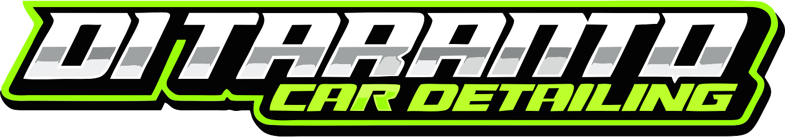

Propuestas visuales
Elegí la estética del CRM
01
Studio Dark
Negro, verde neón, tarjetas oscuras y sensación premium.
- Ideal si querés que parezca un detailing studio moderno.
- Hace destacar más el logo y los botones de acción.
- Muy bueno para usar en taller con poca luz.
02
Motorsport Neon
Más agresivo, con diagonales, acentos verdes y look deportivo.
- Va muy bien con el logo metalizado y verde.
- Más llamativo, con personalidad de marca fuerte.
- Puede cansar un poco si se usa muchas horas por día.
03
Premium Clean
Fondo claro, negro y verde controlado, más administrativo.
- Más cómodo para trabajo diario y lectura rápida.
- Se siente más ordenado para caja, turnos y clientes.
- Menos impactante, pero más profesional y durable.
Mi recomendación
Usaría Studio Dark como base: conserva la identidad negra/verde de Ditaranto,
se ve premium y sigue siendo cómodo para gestionar turnos, caja y clientes todos los días.